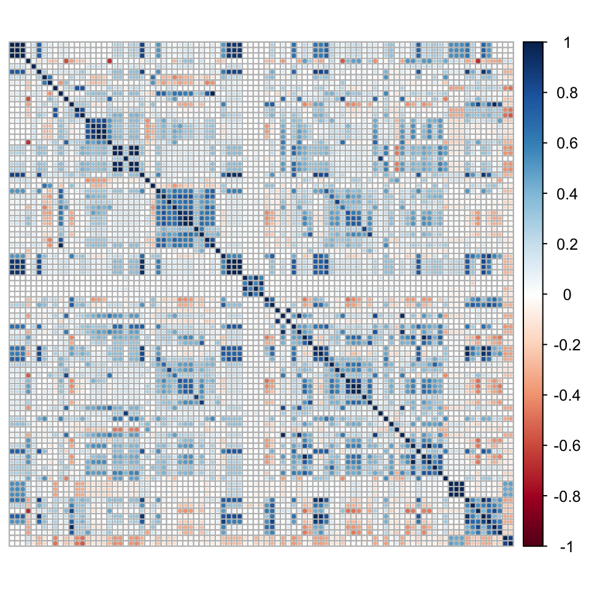
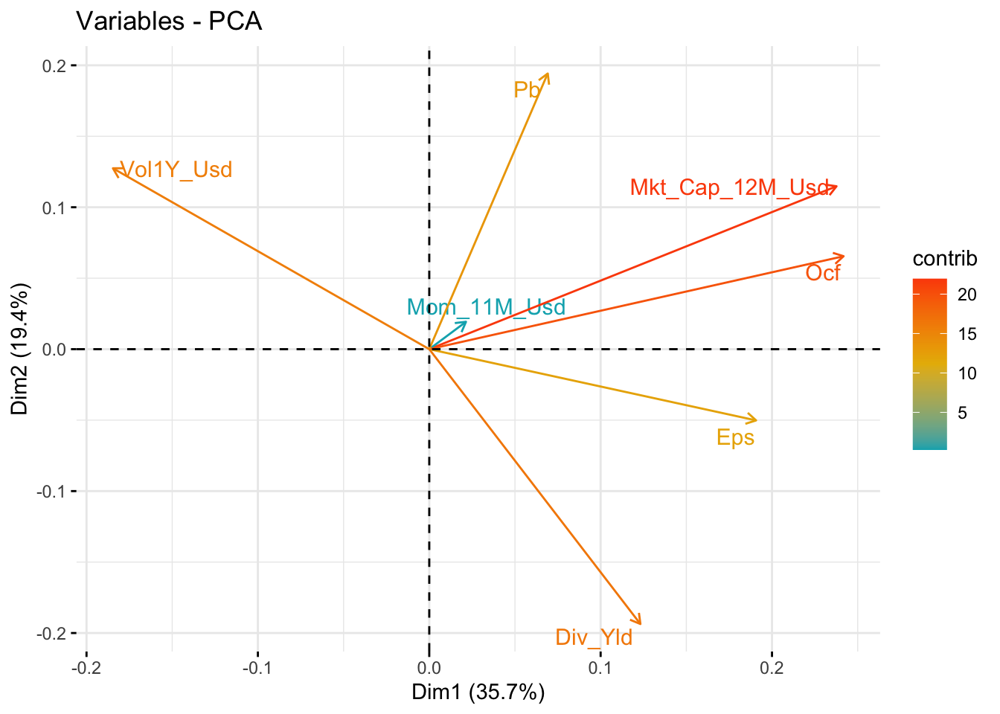
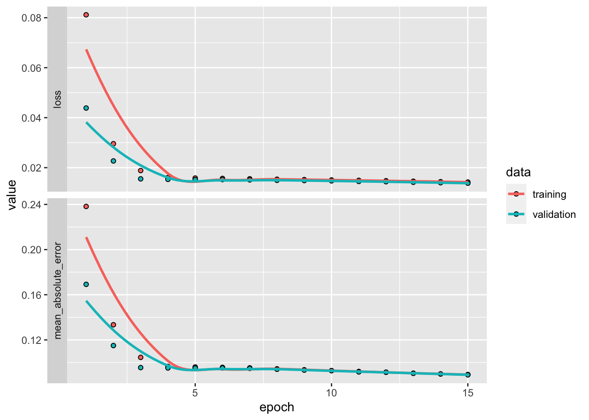

15 无监督学习
5 到 9 章中介绍的所有算法都属于较大类别的监督学习工具。此类工具旨在揭示预测变量 \(\textbf{X}\) 和标签 \(\textbf{Z}\) 之间的映射。监督来自于这样一个事实：要求数据试图解释这个特定的变量 \(\textbf{Z}\)。ML的另一个重要部分包括无监督学习任务，即当未指定 \(\textbf{Z}\) 并且算法尝试自行理解 \(\textbf{X}\) 时。通常，\(\textbf{X}\) 的组成部分之间的关系是可以确定的。这个领域太大了，无法在一本书中概括，更不用说一章了。这里的目的是简要解释无监督学习可以如何使用，特别是在数据预处理阶段。
15.1 相关预测变量的问题
通常，人们很容易将所有预测变量提供给ML驱动的预测引擎。当某些预测变量高度相关时，这可能不是一个好主意。为了说明这一点，最简单的例子是对具有零均值、协方差和精度矩阵的两个变量进行回归： \[\boldsymbol{\Sigma}=\textbf{X}'\textbf{X}=\begin{bmatrix} 1 & \rho \\ \rho & 1 \end{bmatrix}, \quad \boldsymbol{\Sigma}^{-1}=\frac{1}{1-\rho^2}\begin{bmatrix} 1 & -\rho \\ -\rho & 1 \end{bmatrix}.\] 当协方差/相关性 \(\rho\) 向 1 增加（两个变量共线性）时，\(\boldsymbol{\Sigma}^{-1}\) 中的缩放分母变为零，并且公式 \(\hat{\boldsymbol{\beta}}=\boldsymbol{\Sigma}^{-1}\textbf{X}'\textbf{Z}\) 意味着一个系数将高度正，一个系数高度负。回归在两个变量之间创建了虚假套利。当然，这是非常低效的，并且会在样本外产生灾难性的结果。
我们在下面的回归中说明了当使用许多变量时会发生什么（表 15.1）。对上述现象的一种解释来自变量Mkt_Cap_12M_Usd和Mkt_Cap_6M_Usd，它们在训练样本中的相关性达到99.6%。两者都被认为非常重要，但它们的迹象是矛盾的。此外，它们的系数大小非常接近（0.21 与 0.18），因此它们的净效应相互抵消。当然，仅提供这两个输入之一的回归会更明智。
library(broom) # Package for clean regression output
training_sample %>%
dplyr::select(c(features, "R1M_Usd")) %>% # List of variables
lm(R1M_Usd ~ . , data = .) %>% # Model: predict R1M_Usd
tidy() %>% # Put output in clean format
filter(abs(statistic) > 3) %>% # Keep significant predictors only
knitr::kable(booktabs = TRUE,
caption = "Significant predictors in the training sample.") | 术语 | 估计 | 标准错误 | 统计 | p值 |
|---|---|---|---|---|
| （拦截） | 0.0405741 | 0.0053427 | 7.594323 | 0.0000000 |
| 税息折旧及摊销前利润 | 0.0132374 | 0.0034927 | 3.789999 | 0.0001507 |
| 息税折旧摊销前利润 | 0.0068144 | 0.0022563 | 3.020213 | 0.0025263 |
| 法_慈 | 0.0072308 | 0.0023465 | 3.081471 | 0.0020601 |
| Fcf_Bv | 0.0250538 | 0.0051314 | 4.882465 | 0.0000010 |
| Fcf_Yld | -0.0158930 | 0.0037359 | -4.254126 | 0.0000210 |
| Mkt_Cap_12M_Usd | 0.2047383 | 0.0274320 | 7.463476 | 0.0000000 |
| Mkt_Cap_6M_Usd | -0.1797795 | 0.0459390 | -3.913443 | 0.0000910 |
| Mom_5M_Usd | -0.0186690 | 0.0044313 | -4.212972 | 0.0000252 |
| Mom_Sharp_11M_Usd | 0.0178174 | 0.0046948 | 3.795131 | 0.0001476 |
| 镍 | 0.0154609 | 0.0044966 | 3.438361 | 0.0005854 |
| Ni_Avail_Margin | 0.0118135 | 0.0038614 | 3.059359 | 0.0022184 |
| OCF_Bv | -0.0198113 | 0.0052939 | -3.742277 | 0.0001824 |
| 铅 | -0.0178971 | 0.0031285 | -5.720637 | 0.0000000 |
| 佩 | -0.0089908 | 0.0023539 | -3.819565 | 0.0001337 |
| 销售_Ps | -0.0157856 | 0.0046278 | -3.411062 | 0.0006472 |
| Vol1Y_USD | 0.0114250 | 0.0027923 | 4.091628 | 0.0000429 |
| Vol3Y_USD | 0.0084587 | 0.0027952 | 3.026169 | 0.0024771 |
其实，市值的指标有好几个，也许只有一个就够了，但哪个是最好的选择并不明显。
为了进一步描述相关性问题，我们计算以下预测变量的相关矩阵（在训练样本上）。由于其尺寸，我们以图形方式显示它。由于标签太多，我们将其删除。
library(corrplot) # Package for plots of correlation matrices
C <- cor(training_sample %>% dplyr::select(features)) # Correlation matrix
corrplot(C, tl.pos='n') # Plot
图 15.1：预测变量的相关矩阵。
图 15.1 的图形显示对角线周围有几个蓝色方块。例如，特征的前三分之一周围的最大正方形与基于自由现金流的所有会计比率相关。由于计算中存在这个通用术语，这些特征自然是高度相关的。这些局部相关模式在数据集中出现多次，并解释了为什么对这组特征使用简单回归不是一个好主意。
坦率地说，多重共线性（当预测变量相关时）对于 ML 工具来说可能比对于纯统计推断来说问题要小得多。在统计学中，一个中心目标是研究 \(\beta\) 系数的属性。共线性扰乱了这种分析。在ML中，目标是最大化样本外的准确性。如果拥有许多预测变量会有所帮助，那就这样吧。一个简单的例子可以帮助澄清这个问题。构建回归树时，拥有多个预测变量将为分割提供更多选择。如果这些特征有意义，那么它们就会很有用。同样的推理也适用于随机森林和提升树。重要的是，大量的特征有助于提高模型的泛化能力。它们的共线性是无关的。
在本章的剩余部分，我们提出了两种有助于减少预测变量数量的方法：
- 第一种旨在创建彼此不相关的新变量。从算法的角度来看，低相关性是有利的，但新变量缺乏可解释性；
- 第二个将预测变量收集到同质簇中，并且只应从该簇中选择一个特征。这里的基本原理是相反的：可解释性比统计属性更受青睐，因为所得的特征集可能仍然包含高相关性，尽管与原始特征相比，相关性较低。
15.2 主成分分析和自动编码器
第一种方法是降维的基石。它试图确定较少数量的因素 (\(K'<K\))，以便：
- i) 解释力水平保持尽可能高；
- ii) 结果因子是原始变量的线性组合；
- iii) 产生的因素是正交的。
15.2.1 一点代数
在这一小节中，我们定义了完全理解主成分分析 (PCA) 推导所需的一些关键概念。从今以后，我们将使用矩阵（以粗体显示）。如果 \(I> K\) 和 \(\textbf{X}'\textbf{X}=\textbf{I}_K\) 则 \(I \times K\) 矩阵 \(\textbf{X}\) 是正交的。当 \(I=K\) 时，（方）矩阵称为正交矩阵，当 \(\textbf{X}'\textbf{X}=\textbf{X}\textbf{X}'=\textbf{I}_K\) 时，即 \(\textbf{X}^{-1}=\textbf{X}'\)。
矩阵理论的一个基本结果是奇异值分解（SVD，参见 Meyer (2000) 中的第 5 章）。 SVD 的公式如下：任何 \(I \times K\) 矩阵 \(\textbf{X}\) 都可以分解为 \[\begin{equation} \tag{15.1} \textbf{X}=\textbf{U} \boldsymbol{\Delta} \textbf{V}', \end{equation}\] 其中 \(\textbf{U}\) (\(I\times I\)) 和 \(\textbf{V}\) (\(K \times K\)) 是正交的，\(\boldsymbol{\Delta}\)（尺寸为 \(I\times K\)）是对角线，即 \(\Delta_{i,k}=0\) 每当 \(i\neq k\) 时。另外，\(\Delta_{i,i}\ge 0\)：\(\boldsymbol{\Delta}\) 的对角项是非负的。
为简单起见，我们假设以下 \(\textbf{1}_I'\textbf{X}=\textbf{0}_K'\)，即所有列的总和为零（因此均值为零）。32 这允许写协方差矩阵等于其样本估计 \(\boldsymbol{\Sigma}_X= \frac{1}{I-1}\textbf{X}'\textbf{X}\)。
协方差矩阵的一个重要特征是其对称性。事实上，实值对称（方）矩阵享有更强大的 SVD：当 \(\textbf{X}\) 对称时，存在一个正交矩阵 \(\textbf{Q}\) 和一个对角矩阵 \(\textbf{D}\) ，使得 \[\begin{equation} \tag{15.2} \textbf{X}=\textbf{Q}\textbf{DQ}'. \end{equation}\] 此过程称为 对角化（请参阅 Meyer (2000) 中的第 7 章），并且可以方便地应用于协方差矩阵。
15.2.2 PCA
PCA 的目标是构建一个数据集 \(\tilde{\textbf{X}}\)，该数据集具有较少的列，但在压缩原始数据集 \(\textbf{X}\) 时保留尽可能多的信息。关键概念是 基变换，它是 \(\textbf{X}\) 到 \(\textbf{Z}\)（具有相同维度的矩阵）的线性变换，通过 \[\begin{equation} \tag{15.3} \textbf{Z}=\textbf{XP}, \end{equation}\] 其中 \(\textbf{P}\) 是 \(K \times K\) 矩阵。当然，将 \(\textbf{X}\) 转换为 \(\textbf{Z}\) 的方法有无数种，但两个基本约束有助于减少可能性。第一个约束是 \(\textbf{Z}\) 的列不相关。具有不相关的特征是可取的，因为它们都讲述不同的故事并且具有零冗余。第二个约束是 \(\textbf{Z}\) 列的方差高度集中。这意味着少数因子（列）将捕获大部分解释力（信号），而大多数其他因子将主要由噪声组成。所有这些都编码在 \(\textbf{Z}\) 的协方差矩阵中：
- 第一个条件要求协方差矩阵是对角的；
- 第二个条件要求对角线元素，当按递减的幅度排列时，它们的值会下降（如果可能的话，急剧下降）。
\(\textbf{Z}\) 的协方差矩阵为 \[\begin{equation} \tag{15.4} \boldsymbol{\Sigma}_Z=\frac{1}{I-1}\textbf{Z}'\textbf{Z}=\frac{1}{I-1}\textbf{P}'\textbf{X}'\textbf{XP}=\frac{1}{I-1}\textbf{P}'\boldsymbol{\Sigma}_X\textbf{P}. \end{equation}\]
在此表达式中，我们插入 \(\boldsymbol{\Sigma}_X\) 的分解 (15.2)： \[\boldsymbol{\Sigma}_Z=\frac{1}{I-1}\textbf{P}'\textbf{Q}\textbf{DQ}'\textbf{P},\] 因此选择 \(\textbf{P}=\textbf{Q}\)，通过正交性，我们得到 \(\boldsymbol{\Sigma}_Z=\frac{1}{I-1}\textbf{D}\)，即 \(\textbf{Z}\) 的对角协方差矩阵。然后可以按照方差降序重新排列 \(\textbf{Z}\) 的列，以便 \(\boldsymbol{\Sigma}_Z\) 的对角线元素逐渐缩小。这很有用，因为它有助于找到信息内容最多的因子（第一个因子）。在极限情况下，常数向量（方差为零）不携带信号。
矩阵 \(\textbf{Z}\) 是 \(\textbf{X}\) 的线性变换，因此，即使该信息的编码不同，它也应该携带相同的信息。由于各列是根据其相对重要性排序的，因此很容易省略其中一些列。新的特征集 \(\tilde{\textbf{X}}\) 包含在 \(\textbf{Z}\) 的前 \(K'\)（带有 \(K'<K\)）列中。
下面，我们展示如何使用 factoextra 包执行 PCA 并可视化输出。为了便于阅读，我们使用较小的样本和很少的预测变量。
pca <- training_sample %>%
dplyr::select(features_short) %>% # Smaller number of predictors
prcomp() # Performs PCA
pca # Show the result## Standard deviations (1, .., p=7):
## [1] 0.4536601 0.3344080 0.2994393 0.2452000 0.2352087 0.2010782 0.1140988
##
## Rotation (n x k) = (7 x 7):
## PC1 PC2 PC3 PC4 PC5 PC6
## Div_Yld 0.27159946 -0.57909866 0.04572501 -0.52895604 -0.22662581 -0.506566090
## Eps 0.42040708 -0.15008243 -0.02476659 0.33737265 0.77137719 -0.301883295
## Mkt_Cap_12M_Usd 0.52386846 0.34323935 0.17228893 0.06249528 -0.25278113 -0.002987057
## Mom_11M_Usd 0.04723846 0.05771359 -0.89715955 0.24101481 -0.25055884 -0.258476580
## Ocf 0.53294744 0.19588990 0.18503939 0.23437100 -0.35759553 -0.049015486
## Pb 0.15241340 0.58080620 -0.22104807 -0.68213576 0.30866476 -0.038674594
## Vol1Y_Usd -0.40688963 0.38113933 0.28216181 0.15541056 -0.06157461 -0.762587677
## PC7
## Div_Yld 0.032011635
## Eps 0.011965041
## Mkt_Cap_12M_Usd 0.714319417
## Mom_11M_Usd 0.043178747
## Ocf -0.676866120
## Pb -0.168799297
## Vol1Y_Usd 0.008632062旋转矩阵给出 \(\textbf{P}\)：它是执行基变换的工具。输出的第一行表示每个新因子（列）的标准差。每个因子均通过 PC 指数（主成分）表示。通常，第一个 PC（输出中的第一列 PC1）对所有初始特征进行正向加载：所有预测变量的凸加权平均值预计会携带大量信息。在上面的例子中，情况几乎如此，除了波动性之外，它在第一个 PC 中具有负系数。第二个 PC 是市净率（多头）和股息收益率（空头）之间的套利。第三个 PC 是逆向的，因为它在动量上负载很大且呈负向。并非所有主成分都易于解释。
有时，可视化主成分的构建方式可能很有用。在图 15.2 中，我们展示了一种用于两个因子（通常是前两个）的流行表示。
library(factoextra) # Package for PCA visualization
fviz_pca_var(pca, # Source of PCA decomposition
col.var="contrib",
gradient.cols = c("#00AFBB", "#E7B800", "#FC4E07"),
repel = TRUE # Avoid text overlapping
)
图 15.2：二维 PCA 的视觉表示。
该图显示，前两个主成分均未使所有初始因子保持同号。第一个主成分中波动性的符号为负，第二个主成分中每股收益和股息收益率的符号为负。沿轴指示的数字是每个 PC 的解释方差比例。与输出第一行中的数字相比，对数字进行平方，然后除以总平方和。
一旦知道旋转，就可以选择转换数据的子样本。从最初的 7 个特征中，很容易只选择 4 个。
training_sample %>% # Start from large sample
dplyr::select(features_short) %>% # Keep only 7 features
as.matrix() %>% # Transform in matrix
multiply_by_matrix(pca$rotation[,1:4]) %>% # Rotate via PCA (first 4 columns of P)
`colnames<-`(c("PC1", "PC2", "PC3", "PC4")) %>% # Change column names
head() # Show first 6 lines## PC1 PC2 PC3 PC4
## [1,] 0.3989674 0.7578132 -0.13915223 0.3132578
## [2,] 0.4284697 0.7587274 -0.40164338 0.3745255
## [3,] 0.5215295 0.5679119 -0.10533870 0.2574949
## [4,] 0.5445359 0.5335619 -0.08833864 0.2281793
## [5,] 0.5672644 0.5339749 -0.06092424 0.2320938
## [6,] 0.5871306 0.6420126 -0.44566482 0.3075399然后，这 4 个因素可以用作任何 ML 引擎中的正交特征。这些特征不相关的事实无疑是一种优势。但这种便利的代价很高：这些特征不再可以立即解释。去相关预测变量在算法中添加了另一层“blackbox-ing”。
PCA 也可用于估计因子模型。在方程 (15.3) 中，只需将 \(\textbf{Z}\) 替换为收益率，将 \(\textbf{X}\) 替换为因子值，将 \(\textbf{P}\) 替换为因子载荷（例如，请参阅 Connor and Korajczyk (1988) 以获取早期参考）。最近，Lettau and Pelger (2020a) 和 Lettau and Pelger (2020b) 提出了对 PCA 估计技术的彻底分析。他们特别认为，收益率的一阶矩很重要，应该与二阶矩的优化一起包含在目标函数中。
我们以技术说明结束本小节。通常，PCA 作用于收益率的协方差矩阵。有时，分解 相关性 矩阵可能更好。如果变量具有非常不同的方差（股票空间中的情况并非如此），结果可能会大幅调整。如果投资领域包含多个资产类别，那么基于相关性的主成分分析将降低波动性最大的类别的重要性。在这种情况下，就好像所有收益率都根据各自的波动性进行缩放。
15.2.3 自动编码器
在 PCA 中，从 \(\textbf{X}\) 到 \(\textbf{Z}\) 的编码是直接、线性的并且双向工作： \[\textbf{Z}=\textbf{X}\textbf{P} \quad \text{and} \quad \textbf{X}=\textbf{ZP}',\] 这样我们就可以从 \(\textbf{Z}\) 中恢复 \(\textbf{X}\) 。这可以用不同的方式写： \[\begin{equation} \tag{15.5} \textbf{X} \quad \overset{\text{encode via }\textbf{P}}{\longrightarrow} \quad \textbf{Z} \quad \overset{\text{decode via } \textbf{P}'}{\longrightarrow} \quad \textbf{X} \end{equation}\]
如果我们采用截断版本并寻求较小的输出（仅包含 \(K'\) 列），则给出：
\[\begin{equation} \tag{15.6} \textbf{X}, \ (I\times K) \quad \overset{\text{encode via }\textbf{P}_{K'}}{\longrightarrow} \quad \tilde{\textbf{X}}, \ (I \times K') \quad \overset{\text{decode via } \textbf{P}'_{K'}}{\longrightarrow} \quad \breve{\textbf{X}},\ (I \times K), \end{equation}\]
其中 \(\textbf{P}_{K'}\) 是 \(\textbf{P}\) 对 \(K'\) 列的限制，这些列对应于方差最大的因子。矩阵的维数在括号内表示。在这种情况下，重新编码无法准确地恢复 \(\textbf{X}\) ，而只能恢复近似值，我们将其写为 \(\breve{\textbf{X}}\) 。该近似值使用较少的信息进行编码，因此该新数据 \(\breve{\textbf{X}}\) 被压缩并提供原始样本 \(\textbf{X}\) 的简约表示。
自动编码器将此概念推广到 非线性 编码函数。简单的线性自动编码器与潜在因子模型相关联（有关单层自动编码器的情况，请参阅 Gu, Kelly, and Xiu (2020a) 中的命题 1。）该方案如下 \[\begin{equation} \tag{15.7} \textbf{X},\ (I\times K) \quad \overset{\text{encode via } N} {\longrightarrow} \quad \tilde{\textbf{X}}=N(\textbf{X}), \ (I \times K') \quad \overset{\text{decode via } N'}{\longrightarrow} \quad \breve{\textbf{X}}=N'(\tilde{\textbf{X}}), \ (I \times K), \end{equation}\]
其中编码和解码函数 \(N\) 和 \(N'\) 通常被视为神经网络。术语 自动编码器 来自这样一个事实：目标输出（我们经常写为 \(\textbf{Z}\)）是原始样本 \(\textbf{X}\)。因此，该算法寻求确定使 \(\textbf{X}\) 和输出值 \(\breve{\textbf{X}}\) 之间的距离（待定义）最小化的函数 \(N\)。编码器生成 \(\textbf{X}\) 的替代表示，而解码器尝试将其重新编码回其原始值。当然，中间（编码）版本 \(\tilde{\textbf{X}}\) 的目标是比 \(\textbf{X}\) 具有更小的尺寸。
15.2.4 应用
自动编码器很容易在 Keras 中编码（有关 Keras 的更多详细信息，请参阅第 7 章）。为了强调该框架的强大功能，我们采用了另一种神经网络编码方式：所谓的函数式 API。为简单起见，我们使用少量预测变量（7 个特征）。该网络的结构由两个对称网络组成，只有一个中间层包含 32 个单元。激活函数为sigmoid；这是有道理的，因为输入具有单位间隔内的值。
input_layer <- layer_input(shape = c(7)) # features_short has 7 columns
encoder <- input_layer %>% # First, encode
layer_dense(units = 32, activation = "sigmoid") %>%
layer_dense(units = 4) # 4 dimensions for the output layer (same as PCA example)
decoder <- encoder %>% # Then, from encoder, decode
layer_dense(units = 32, activation = "sigmoid") %>%
layer_dense(units = 7) # the original sample has 7 features在训练部分，我们优化 MSE 并使用权重的 Adam 更新（参见 7.2.3 节）。
ae_model <- keras_model(inputs = input_layer, outputs = decoder) # Builds the model
ae_model %>% compile( # Learning parameters
loss = 'mean_squared_error',
optimizer = 'adam',
metrics = c('mean_absolute_error')
)最后，我们准备好训练数据本身了！训练和测试样本的损失演变如图 15.3 所示。下降的模式表明压缩质量的进步。
fit_ae <- ae_model %>%
fit(training_sample %>% dplyr::select(features_short) %>% as.matrix(), # Input
training_sample %>% dplyr::select(features_short) %>% as.matrix(), # Output
epochs = 15, batch_size = 512,
validation_data = list(testing_sample %>% dplyr::select(features_short) %>% as.matrix(),
testing_sample %>% dplyr::select(features_short) %>% as.matrix())
)
plot(fit_ae) + theme_minimal()
图 15.3：自动编码器训练的输出。
为了获取所有权重和偏差的详细信息，语法如下。
ae_weights <- ae_model %>% get_weights()检索编码器并将数据处理为压缩格式只是矩阵操作的问题。在实践中，可以通过从编码器加载权重来构建子模型（参见下面的练习）。
15.3 通过 k-means 进行聚类
第二类无监督工具与聚类有关。特征被分组为同质的预测因子家族。然后可以从一组中挑选出一个（或创建所有组的综合平均值）。从机械上来说，预测变量的数量减少了。
原理很简单：在一组变量中（对于其他维度的观察，推理是相同的）\(\textbf{x}_{\{1 \le j \le J\}}\)，找到最小化 \(k<J\) 组的组合 \[\begin{equation} \tag{15.8} \sum_{i=1}^k\sum_{\textbf{x}\in S_i}||\textbf{x}-\textbf{m}_i||^2, \end{equation}\] 其中 \(||\cdot ||\) 是一些范数，通常被视为欧几里得 \(l^2\) 范数。 \(S_i\) 是组，最小化在整个组 \(\textbf{S}\) 上运行。 \(\textbf{m}_i\) 是群均值（也称为质心或重心）：\(\textbf{m}_i=(\text{card}(S_i))^{-1}\sum_{\textbf{x}\in S_i}\textbf{x}\)。
为了确保最优性，必须测试所有可能的安排，当 \(k\) 和 \(J\) 很大时，这会非常长。因此，问题通常是用贪婪算法来解决的，这些算法寻求（并找到）不是最优但“足够好”的解决方案。
一种启发式方法如下：
- 从 \(k\) 簇的（可能是随机的）分区开始。
- 对于每个簇，计算最小化表达式 (15.8) 的最佳平均值 \(\textbf{m}_i^*\)。这是一个简单的二次规划。
- 给定最佳中心 \(\textbf{m}_i^*\)，重新分配点 \(\textbf{x}_i\)，使它们都最接近其中心。
- 重复步骤 1. 和 2.，直到步骤 2 中的点不改变聚类。
下面，我们通过示例说明此过程。从所有 93 个特征中，我们构建了 10 个集群。
set.seed(42) # Setting the random seed (the optim. is random)
k_means <- training_sample %>% # Performs the k-means clustering
dplyr::select(features) %>%
as.matrix() %>%
t() %>%
kmeans(10)
clusters <- tibble(factor = names(k_means$cluster), # Organize the cluster data
cluster = k_means$cluster) %>%
arrange(cluster)
clusters %>% filter(cluster == 4) # Shows one particular group## # A tibble: 4 × 2
## factor cluster
## <chr> <int>
## 1 Asset_Turnover 4
## 2 Bb_Yld 4
## 3 Recurring_Earning_Total_Assets 4
## 4 Sales_Ps 4我们挑选出第四组，它主要由与公司盈利能力相关的会计比率组成。给定这 10 个集群，我们可以构建更小的一组特征，然后将其输入到 5 到 9 章中描述的预测引擎。簇的代表可以是最接近中心的成员，或者只是中心本身。然而，这个预处理步骤可能会在预测阶段引起问题。通常，它还要求对训练数据进行聚类。测试数据的扩展并不简单（集群可能不相同）。
15.4 最近的邻居
据我们所知，最近邻居并未在大规模投资组合选择应用中使用。原因很简单：计算成本。尽管如此，邻居的概念在无监督学习中广泛存在，并且可以在本地使用以补充可解释性工具。与分类任务错误率界限相关的 k-NN 理论结果可以在 Ripley (2007) 的 6.2 节中找到。理由如下。如果：
- 训练样本能够准确地跨越 \((\textbf{y}, \textbf{X})\) 的分布； 和
- 测试样本遵循与训练样本相同的分布（或足够接近）；
那么根据训练样本计算的测试特征中的一个实例 \(\textbf{x}_i\) 的邻域将产生关于 \(y_i\) 的有价值的信息。
因此，在下文中，我们寻求找到一个特定实例 \(\textbf{x}_i\)（一个 \(K\) 维行向量）的邻居。请注意，与上一节有一个主要区别：聚类是在观察级别（行）而不是预测变量级别（列）。
给定一个具有相同（对应）列 \(\textbf{X}_{i,k}\) 的数据集，邻居是通过相似性度量（或距离）定义的 \[\begin{equation} \tag{15.9} D(\textbf{x}_j,\textbf{x}_i)=\sum_{k=1}^Kc_k d_k(x_{j,k},x_{i,k}), \end{equation}\] 其中距离函数 \(d_k\) 可以对各种数据类型（数值、分类等）进行运算。对于数值，\(d_k(x_{j,k},x_{i,k})=(x_{j,k}-x_{i,k})^2\) 或 \(d_k(x_{j,k},x_{i,k})=|x_{j,k}-x_{i,k}|\)。对于分类值，我们参考 Boriah, Chandola, and Kumar (2008) 的详尽调查，其中列出了 14 种可能的衡量标准。最后，方程 (15.9) 中的 \(c_k\) 通过加权特征提供了一定的灵活性。这很有用，因为原始值（\(x_{i,k}\) 与 \(x_{i,k'}\)）或测量输出（\(d_k\) 与 \(d_{k'}\)）可以具有不同的比例。
一旦计算了整个样本的距离，就会使用索引 \(l_1^i, \dots, l_I^i\) 对它们进行排名： \[D\left(\textbf{x}_{l_1^i},\textbf{x}_i\right) \le D\left(\textbf{x}_{l_2^i},\textbf{x}_i\right) \le \dots, \le D\left(\textbf{x}_{l_I^i},\textbf{x}_i\right)\]
最近的邻居是 \(m=1,\dots,k\) 的由 \(l_m^i\) 索引的邻居。为了简单起见，我们忽略了存在 \(D\left(\textbf{x}_{l_m^i},\textbf{x}_i\right)=D\left(\textbf{x}_{l_{m+1}^i},\textbf{x}_i\right)\) 类型有问题的等式的情况，并且因为只要有足够多的数值预测变量，它们在实践中就很少出现。
给定这些邻居，现在可以为标签侧 \(y_i\) 构建预测。基本原理很简单：如果 \(\textbf{x}_i\) 接近其他实例 \(\textbf{x}_j\)，那么标签值 \(y_i\) 也应该接近 \(y_j\)（假设这些特征在标签 \(y\) 上携带一些预测信息）。
\(y_i\) 的直观预测是以下加权平均值： \[\hat{y}_i=\frac{\sum_{j\neq i} h(D(\textbf{x}_j,\textbf{x}_i)) y_j}{\sum_{j\neq i} h(D(\textbf{x}_j,\textbf{x}_i))},\] 其中 \(h\) 是递减函数。因此，\(\textbf{x}_j\) 距 \(\textbf{x}_i\) 越远，平均权重越小。 \(h\) 的典型选择是 \(h(z)=e^{-az}\)，因为某些参数 \(a>0\) 决定了距离 \(D(\textbf{x}_j,\textbf{x}_i)\) 的惩罚程度。当然，可以在 \(k\) 最近邻居集中取平均值，在这种情况下，超出特定距离阈值 \(h\) 等于 0： \[\hat{y}_i=\frac{\sum_{j \text{ neighbor}} h(D(\textbf{x}_j,\textbf{x}_i)) y_j}{\sum_{j \text{ neighbor}} h(D(\textbf{x}_j,\textbf{x}_i))}.\]
一个更不可知的规则是对邻居集合采用 \(h:=1\) ，在这种情况下，所有邻居都具有相同的权重（请参阅 T. Bailey and Jain (1978) 在分类情况下的旧讨论）。对于分类任务，该过程涉及投票规则，其中得票最多的类别将赢得比赛，并采用可能的平局打破方法。有兴趣的读者可以看看Bhatia et al. (2010)中的简短调查。
对于最佳 \(k\) 的选择，存在几种复杂的技术和标准（参见，例如 A. K. Ghosh (2006) 和 Peter Hall et al. (2008)）。启发式值通常可以很好地完成这项工作。根据经验，\(k=\sqrt{I}\)（\(I\) 是实例总数）与最佳值相差不太远，除非 \(I\) 非常大。
下面，我们举例说明这个概念。我们选择一个日期（2006 年 12 月 31 日）并挑选出一项资产（stock_id 等于 13）。然后，我们寻求找到在该特定日期最接近该资产的 \(k=30\) 股票。我们求助于 FNN 包，它提出了欧几里德距离（及其排序）的有效计算。
library(FNN) # Package for Fast Nearest Neighbors detection
knn_data <- filter(data_ml, date == "2006-12-31") # Dataset for k-NN exercise
knn_target <- filter(knn_data, stock_id == 13) %>% # Target observation
dplyr::select(features)
knn_sample <- filter(knn_data, stock_id != 13) %>% # All other observations
dplyr::select(features)
neighbors <- get.knnx(data = knn_sample, query = knn_target, k = 30)
neighbors$nn.index # Indices of the k nearest neighbors## [,1] [,2] [,3] [,4] [,5] [,6] [,7] [,8] [,9] [,10] [,11] [,12] [,13] [,14] [,15]
## [1,] 905 876 730 548 1036 501 335 117 789 54 618 130 342 360 673
## [,16] [,17] [,18] [,19] [,20] [,21] [,22] [,23] [,24] [,25] [,26] [,27] [,28] [,29]
## [1,] 153 265 858 830 286 1150 166 946 192 340 162 951 376 785
## [,30]
## [1,] 2一旦知道邻居和距离，我们就可以计算目标股票收益的预测。我们使用函数 \(h(z)=e^{-z}\) 来对实例进行加权（通过距离）。
knn_labels <- knn_data[as.vector(neighbors$nn.index),] %>% # y values for neighb.
dplyr::select(R1M_Usd)
sum(knn_labels * exp(-neighbors$nn.dist) / sum(exp(-neighbors$nn.dist))) # Pred w. k(z)=e^(-z)## [1] 0.003042282## # A tibble: 1 × 1
## R1M_Usd
## <dbl>
## 1 0.089预测既不是很好，也不是很坏（符号是正确的！）。但请注意，此示例不能用于预测目的，因为我们使用 2006 年 12 月 31 日的数据来预测同一日期的回报。为了避免前瞻性偏差，knn_sample变量应该从先前的时间点选择。
上述计算速度很快（最多几秒），但仅适用于一项资产。在 \(k\)-NN 练习中，每只股票都会获得自定义的预测，并且每次都必须重新评估邻居集。对于 \(N\) 资产，必须评估 \(N(N-1)/2\) 距离。这在回测中成本特别高，尤其是当可以测试多个参数时（加权函数 \(h(z)=e^{-az}\) 中的邻居数量、\(k\) 或 \(a\)）。当投资范围较小时（例如交易指数时），k-NN 方法在计算上变得有吸引力（例如参见 Y. Chen and Hao (2017)）。